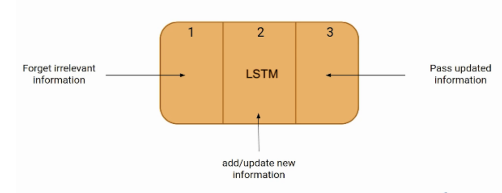

|
During my undergraduate education at Yale University, I worked with Kim Blenman in the Blenman Innovation Group and with Julian Jara-Ettinger in the Computational Social Cognition Lab. I have also been fortunate enough to intern as an AI/ML engineer in the Lockheed Martin AI Center. |

|
|
|
|  |
Jessie Huang, Dennis Shung, Tanushree Burman, Smita Krishnaswamy, Ramesh Batra Journal of the American College of Surgeons, 2022 Paper In this paper, we use an LSTM to accurately predict death within 2 hours post-Terminal Extubation and compare to the standard regression model on priori list of clinical variables. We found that our LSTM was superior to clinical predication score. This information will improve organ donation rates and in facilitating End of Life discussions. |
|
Influences from Jon Barron. |